FRESH FROM THE OVEN • MADE WITH LOVE • VISIT US TODAY • FRESH FROM THE OVEN • MADE WITH LOVE • VISIT US TODAY • FRESH FROM THE OVEN • MADE WITH LOVE • VISIT US TODAY • FRESH FROM THE OVEN • MADE WITH LOVE • VISIT US TODAY •
Get to Know Us
A Taste of France in the City of Pines
Literally translating to "The Grain Workshop," L’Atelier du Grain was born out of a simple mission: to bring authentic, old-world French baking to Baguio without the pretension or steep price tags.
Founded in February 2023 through a partnership between Baguio entrepreneurs Jackson and Cristina So and French master pastry chef Didier Derouet alongside Merna Brazil , the bakeshop has become a daily ritual for locals and a must-stop pasalubong destination for travelers.
The Craft Behind the Counter
Chef Didier’s journey began in France at age 14, launching a culinary career that spanned four continents and over two decades in premier global hotels before he made the Philippines his home.

At L’Atelier du Grain, there are no shortcuts or trendy gimmicks. Every laminated dough, crusty sourdough loaf, and delicate tart is handcrafted fresh daily using real butter, honest ingredients, and time-honored European technique.
We also love celebrating where we live—infusing classic French patisserie with distinct Cordillera flavors, from our Benguet Cappuccino Tart to seasonal creations using local mountain produce. Whether you are stopping in for a warm morning croissant, a flaky kouign-amann, or packing our savory smoked salmon sandwiches for the drive back down to Manila, everything is made to travel well and taste first-rate.
Heart Behind the Flour
Great bread is meant to be shared, and community sits at the center of our kitchen. Beyond our ovens, Chef Didier and the L’Atelier du Grain family actively support local initiatives, including the Helping Hands, Healing Hearts Foundation in Baguio—helping bring care, hope, and vital support to Filipino children.
Visit Our WorkshopsFrom our flagship bakeshop on Military Cut-Off Road to our cozy spots across the city, our team is always ready to welcome you and walk you through whatever just came out of the oven: